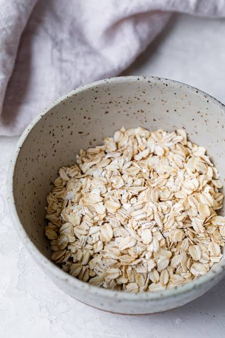

Oatmeal

Oatmeal. It's a little boring but that's kind of the point. We can't go our whole lives with food that's way too stimulating and expensive. We don't live in France.
Oatmeal is a great breakfast option because it's quick, easy, and can be customized to your liking. You can add fruits, nuts, honey, or any other toppings you prefer. It's also a healthy choice that will keep you full and energized throughout the morning.
Ingredients
- 1 cup of rolled oats
- 2 cups of water or milk (or a combination of both)
- A pinch of salt
- Toppings of your choice (e.g., fruits, nuts, honey, cinnamon)
Instructions
Prep time: 5 minutes
Cook time: 5-10 minutes
- In a medium saucepan, bring the water or milk to a boil.
- Add the rolled oats and a pinch of salt. Reduce the heat to low and simmer for about 5-10 minutes, stirring occasionally, until the oats are soft and have absorbed most of the liquid.
- Remove from heat and let it sit for a minute or two to thicken.
- Serve in bowls and add your favorite toppings.
- Enjoy your warm and comforting bowl of oatmeal!